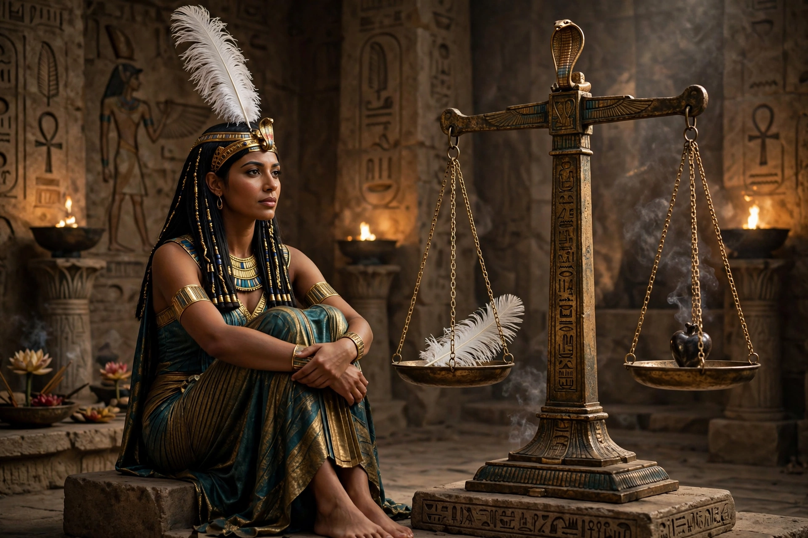

From Wikipedia, the free encyclopedia
| Maat | |
|---|---|
| Affiliation | Egyptian mythology; goddess and concept of truth, justice and cosmic order |
| Symbol | The feather of Maat (ostrich feather) |
| Role | Her feather weighs the hearts of the dead; kings 'present Maat' to the gods |
| Opposite | Isfet (chaos, disorder, injustice) |

Maat (Egyptian mꜢꜥt) is both a goddess and the central concept of ancient Egyptian civilisation: truth, justice, balance and the right order of the cosmos, established at creation and perpetually threatened by its opposite, isfet — chaos, lies and disorder. Depicted as a woman wearing a single ostrich feather, or simply as the feather itself, Maat is less a character of myth than the standard by which gods, kings and the dead are judged: at the weighing of the heart, it is her feather that the heart of the deceased must balance, neither heavier with sin nor lighter with falsity.
Maat was established when the world was made — when Ra subdued chaos and set the sun on its course — and it is maintained, or lost, daily: by the sun's journey, by the king's justice, by every truthful word and fair judgement. Egyptian kings are shown in temple reliefs offering a small figure of Maat to the gods, the most precious offering possible: the king presents order itself, proof that he has upheld it. Judges wore her image; viziers were her priests; the "Negative Confession" of the Book of the Dead — the deceased's declaration before the 42 judges that he has not stolen, lied, killed, or polluted — is a portrait of Maat as a social ethic.
In the judgement hall depicted in the Book of the Dead, Anubis sets the heart on one pan of the scales and the feather of Maat on the other, Thoth records the verdict, and the monster Ammit waits for the heart that fails. The justified dead are declared maa-kheru — "true of voice" — a phrase that follows blessed names for eternity. That a civilisation's supreme value should be a feather's weight — truth as lightness, exactness, poise — is one of ancient Egypt's most distinctive bequests to moral thought.
Egyptian mythology · Anubis · Thoth · Ra · Set